BestBefore
An expiry date tracker for your fridge, freezer and cupboard
Scan a barcode and the product is filled in from Open Food Facts; point the camera at the printed date and the phone reads it. Your food is sorted by where you keep it, a reminder comes before something expires, essentials you use up go onto the shopping list, and the Recipe tab turns what is about to expire into a recipe or a three-day menu. Home Screen widgets show what to use first.
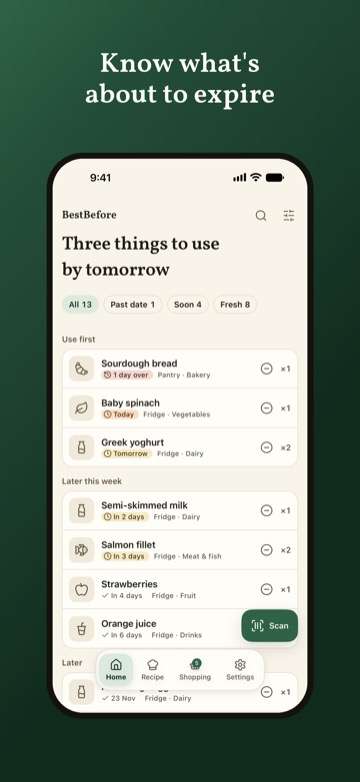
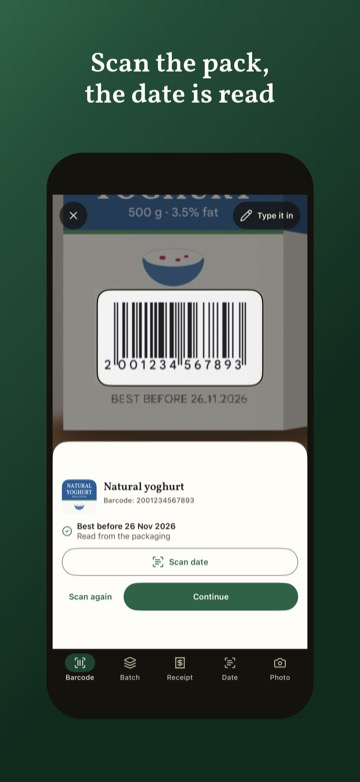
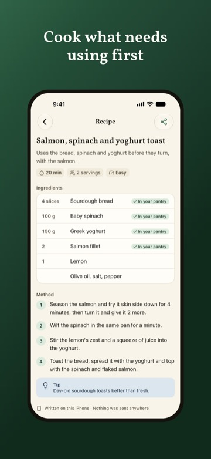
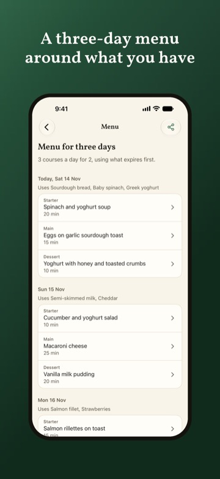
Free, private, open source
- Free, with no ads and no subscription. No account needed.
- Your pantry stays on your phone. Export a backup whenever you like.
- No tracking. The app sends crash reports, and barcodes are looked up on Open Food Facts.
- Open source (Apache-2.0): the source code is on GitHub.
- In English, Russian and Norwegian.
Recipes from what is about to expire
- Free: share a ready-made prompt to the AI app you already use.
- Free on the phone itself, where the phone supports it: Apple Intelligence on iPhone (iOS 26 or later), Gemini Nano on some Android phones.
- Optional recipe packs, bought once in the app (no subscription): recipes written by our server, and the three-day menu. A recipe from a pack sends the items you tick, your recipe settings and your allergens to our server. The free ways send nothing to us.
Get it
Download on the App Store iPhone and iPad
Android: Google Play, in closed testing, not public yet.
Privacy policy · Support · Delete your account and data · Source code
Срокоед
Сроки годности продуктов в холодильнике, морозилке и кладовой
Отсканируйте штрихкод — название продукта подставится из Open Food Facts; наведите камеру на напечатанную дату — телефон сам её распознает. Продукты разложены по местам хранения, напоминание приходит до того, как срок истечёт, закончившиеся важные продукты попадают в список покупок, а вкладка «Рецепт» превращает то, что скоро испортится, в рецепт или меню на три дня. Виджеты на экране «Домой» показывают, что съесть в первую очередь.
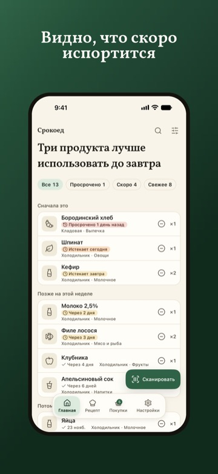
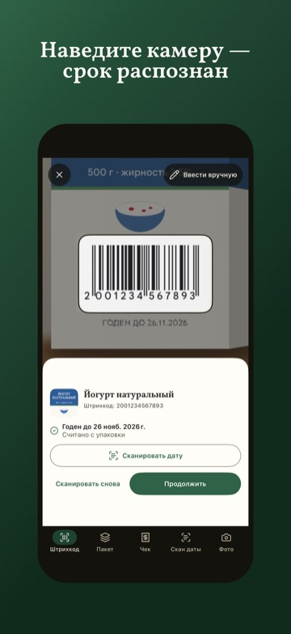
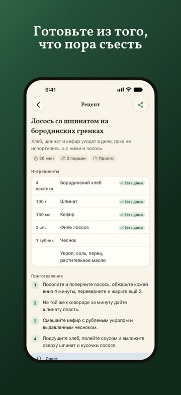
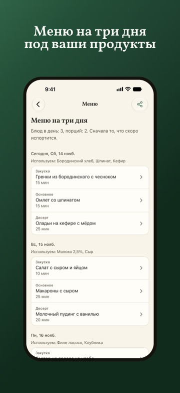
Бесплатно, приватно, с открытым кодом
- Бесплатно, без рекламы и без подписки. Аккаунт не нужен.
- Ваши продукты хранятся на телефоне. Резервную копию можно сохранить в любой момент.
- Без слежки. Приложение отправляет отчёты о сбоях, а штрихкоды ищет в Open Food Facts.
- Открытый код (Apache-2.0): исходный код на GitHub.
- На русском, английском и норвежском.
Рецепты из того, что скоро испортится
- Бесплатно: отправьте готовый запрос в ИИ-приложение, которым уже пользуетесь.
- Бесплатно на самом телефоне, если он это поддерживает: Apple Intelligence на iPhone (iOS 26 и новее), Gemini Nano на некоторых телефонах Android.
- По желанию — пакеты рецептов, разовая покупка в приложении (без подписки): рецепты с нашего сервера и меню на три дня. Для рецепта из пакета приложение отправляет на сервер отмеченные продукты, настройки рецепта и аллергены. Бесплатные способы нам ничего не отправляют.
Где скачать
Загрузить в App Store iPhone и iPad
Android: Google Play, идёт закрытое тестирование, в открытом доступе приложения пока нет.
Политика конфиденциальности · Поддержка · Удаление аккаунта и данных · Исходный код
Matvakt
Holdbarhet på maten i kjøleskapet, fryseren og matskapet
Skann strekkoden, så fylles varen ut fra Open Food Facts; rett kameraet mot den påtrykte datoen, så leser telefonen den. Maten sorteres etter hvor du oppbevarer den, du får en påminnelse før noe går ut på dato, faste varer du bruker opp havner på handlelisten, og Oppskrift-fanen gjør det som snart går ut om til en oppskrift eller en meny for tre dager. Widgeter på Hjem-skjermen viser hva du bør bruke først.
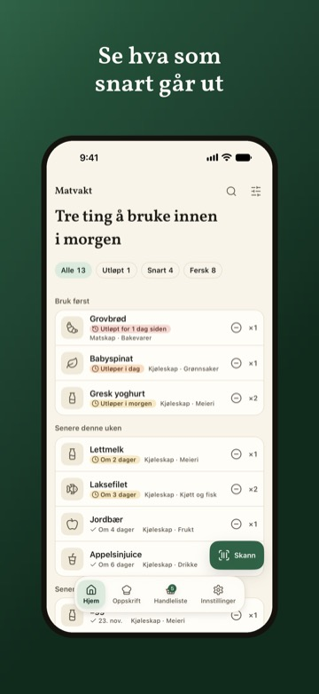
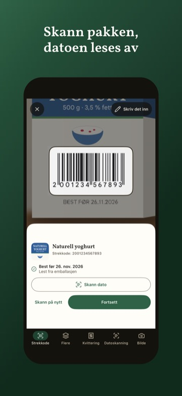
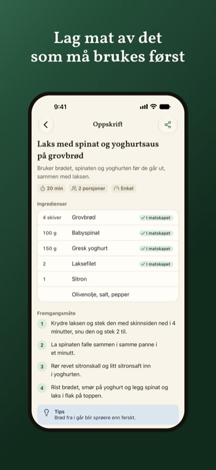
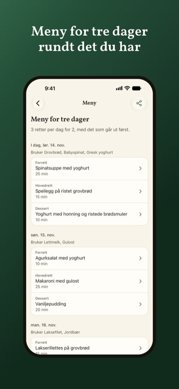
Gratis, privat og åpen kildekode
- Gratis, uten reklame og uten abonnement. Ingen konto nødvendig.
- Matvarene dine blir på telefonen. Ta sikkerhetskopi når du vil.
- Ingen sporing. Appen sender krasjrapporter, og strekkoder slås opp i Open Food Facts.
- Åpen kildekode (Apache-2.0): kildekoden ligger på GitHub.
- På norsk, engelsk og russisk.
Oppskrifter av det som snart går ut
- Gratis: del en ferdig ledetekst med KI-appen du allerede bruker.
- Gratis på selve telefonen, der telefonen støtter det: Apple Intelligence på iPhone (iOS 26 eller nyere), Gemini Nano på noen Android-telefoner.
- Valgfrie oppskriftspakker, engangskjøp i appen (ikke abonnement): oppskrifter skrevet av serveren vår, og menyen for tre dager. En oppskrift fra en pakke sender varene du krysser av, oppskriftsinnstillingene og allergenene dine til serveren vår. De gratis alternativene sender ingenting til oss.
Last ned
Last ned i App Store iPhone og iPad
Android: Google Play, i lukket testing, ikke offentlig ennå.
Personvernerklæring · Brukerstøtte · Slett kontoen og dataene dine · Kildekode